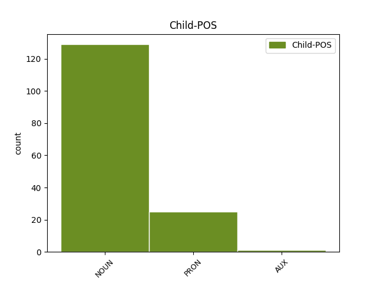

Distribution of features within this leaf


Agreement Rules sorted by frequency.
- When the dependent token is the predicative complements(comp:pred) of the head token, and the head token is AUX and the dependent token is NOUN.
1 #tfaordinario _ _ _ _ 0 _ _ _
2 è _ _ _ _ 0 _ _ _
3 stato essere AUX V Gender=Masc|Number=Sing|Tense=Past|VerbForm=Part 0 _ _ _
4 il _ _ _ _ 0 _ _ _
5 fondo fondo NOUN S Gender=Masc|Number=Sing 3 comp:pred _ _
6 cassa _ _ _ _ 0 _ _ _
7 per _ _ _ _ 0 _ _ _
8 la _ _ _ _ 0 _ _ _
9 riforma _ _ _ _ 0 _ _ _
10 di _ _ _ _ 0 _ _ _
11 la _ _ _ _ 0 _ _ _
12 #labuonascuola _ _ _ _ 0 _ _ _
13 di _ _ _ _ 0 _ _ _
14 @user _ _ _ _ 0 _ _ _
15 . _ _ _ _ 0 _ _ _
16 Beneficienza _ _ _ _ 0 _ _ _
17 la _ _ _ _ 0 _ _ _
18 faccio _ _ _ _ 0 _ _ _
19 quando _ _ _ _ 0 _ _ _
20 dico _ _ _ _ 0 _ _ _
21 io _ _ _ _ 0 _ _ _
22 !!!! _ _ _ _ 0 _ _ _
1 @user1 _ _ _ _ 0 _ _ _
2 @user2 _ _ _ _ 0 _ _ _
3 @user3 _ _ _ _ 0 _ _ _
4 #labuonascuola _ _ _ _ 0 _ _ _
5 siamo essere AUX V Mood=Ind|Number=Plur|Person=1|Tense=Pres|VerbForm=Fin 0 _ _ _
6 noi noi PRON PE Number=Plur|Person=1|PronType=Prs 5 comp:pred _ _
7 docenti _ _ _ _ 0 _ _ _
8 di _ _ _ _ 0 _ _ _
9 le _ _ _ _ 0 _ _ _
10 GI _ _ _ _ 0 _ _ _
11 infetti _ _ _ _ 0 _ _ _
12 da _ _ _ _ 0 _ _ _
13 supplentite _ _ _ _ 0 _ _ _
14 #MIDAperRUOLO _ _ _ _ 0 _ _ _
15 ce _ _ _ _ 0 _ _ _
16 lo _ _ _ _ 0 _ _ _
17 meritiamo _ _ _ _ 0 _ _ _
18 tutti _ _ _ _ 0 _ _ _
19 !! _ _ _ _ 0 _ _ _
Disagree Examples:
1 @user _ _ _ _ 0 _ _ _
2 #Grillo _ _ _ _ 0 _ _ _
3 è essere AUX V Mood=Ind|Number=Sing|Person=3|Tense=Pres|VerbForm=Fin 0 _ _ _
4 anni anno NOUN S Gender=Masc|Number=Plur 3 comp:pred _ _
5 che _ _ _ _ 0 _ _ _
6 non _ _ _ _ 0 _ _ _
7 fà _ _ _ _ 0 _ _ _
8 più _ _ _ _ 0 _ _ _
9 il _ _ _ _ 0 _ _ _
10 comico _ _ _ _ 0 _ _ _
11 ... _ _ _ _ 0 _ _ _
12 loro _ _ _ _ 0 _ _ _
13 sono _ _ _ _ 0 _ _ _
14 decenni _ _ _ _ 0 _ _ _
15 che _ _ _ _ 0 _ _ _
16 fanno _ _ _ _ 0 _ _ _
17 i _ _ _ _ 0 _ _ _
18 buffoni _ _ _ _ 0 _ _ _
19 di _ _ _ _ 0 _ _ _
20 corte _ _ _ _ 0 _ _ _
21 .. _ _ _ _ 0 _ _ _
22 :)) _ _ _ _ 0 _ _ _
23 con _ _ _ _ 0 _ _ _
24 tutti _ _ _ _ 0 _ _ _
25 i _ _ _ _ 0 _ _ _
26 loro _ _ _ _ 0 _ _ _
27 servetti _ _ _ _ 0 _ _ _
1 Siamo essere AUX V Mood=Ind|Number=Plur|Person=1|Tense=Pres|VerbForm=Fin 0 _ _ _
2 lo _ _ _ _ 0 _ _ _
3 stato stato NOUN S Gender=Masc|Number=Sing 1 comp:pred _ _
4 che _ _ _ _ 0 _ _ _
5 sta _ _ _ _ 0 _ _ _
6 più _ _ _ _ 0 _ _ _
7 seduto _ _ _ _ 0 _ _ _
8 su _ _ _ _ 0 _ _ _
9 i _ _ _ _ 0 _ _ _
10 banchi _ _ _ _ 0 _ _ _
11 #labuonascuola _ _ _ _ 0 _ _ _
12 di _ _ _ _ 0 _ _ _
13 il _ _ _ _ 0 _ _ _
14 mondo _ _ _ _ 0 _ _ _
15 e _ _ _ _ 0 _ _ _
16 siamo _ _ _ _ 0 _ _ _
17 in _ _ _ _ 0 _ _ _
18 #crisieconomica _ _ _ _ 0 _ _ _
19 come _ _ _ _ 0 _ _ _
20 tutto _ _ _ _ 0 _ _ _
21 #ilmondo _ _ _ _ 0 _ _ _
22 @user1 _ _ _ _ 0 _ _ _
23 @user2 _ _ _ _ 0 _ _ _
1 L' _ _ _ _ 0 _ _ _
2 unica _ _ _ _ 0 _ _ _
3 risposta _ _ _ _ 0 _ _ _
4 che _ _ _ _ 0 _ _ _
5 ho _ _ _ _ 0 _ _ _
6 avuto _ _ _ _ 0 _ _ _
7 finora _ _ _ _ 0 _ _ _
8 da _ _ _ _ 0 _ _ _
9 parte _ _ _ _ 0 _ _ _
10 di _ _ _ _ 0 _ _ _
11 gli _ _ _ _ 0 _ _ _
12 spacciatori _ _ _ _ 0 _ _ _
13 de _ _ _ _ 0 _ _ _
14 #labuonascuola _ _ _ _ 0 _ _ _
15 è _ _ _ _ 0 _ _ _
16 stata essere AUX VA Gender=Fem|Number=Sing|Tense=Past|VerbForm=Part 0 _ _ _
17 che _ _ _ _ 0 _ _ _
18 i _ _ _ _ 0 _ _ _
19 tagli _ _ _ _ 0 _ _ _
20 a _ _ _ _ 0 _ _ _
21 la _ _ _ _ 0 _ _ _
22 scuola _ _ _ _ 0 _ _ _
23 sono essere AUX V Mood=Ind|Number=Plur|Person=3|Tense=Pres|VerbForm=Fin 16 comp:pred _ _
24 investimenti _ _ _ _ 0 _ _ _
25 #pochino _ _ _ _ 0 _ _ _
1 La _ _ _ _ 0 _ _ _
2 riforma _ _ _ _ 0 _ _ _
3 scuola _ _ _ _ 0 _ _ _
4 pare _ _ _ _ 0 _ _ _
5 l' _ _ _ _ 0 _ _ _
6 abbia _ _ _ _ 0 _ _ _
7 ispirata _ _ _ _ 0 _ _ _
8 la _ _ _ _ 0 _ _ _
9 signora _ _ _ _ 0 _ _ _
10 Renzi _ _ _ _ 0 _ _ _
11 . _ _ _ _ 0 _ _ _
12 Novella _ _ _ _ 0 _ _ _
13 marchesa _ _ _ _ 0 _ _ _
14 ci _ _ _ _ 0 _ _ _
15 regala _ _ _ _ 0 _ _ _
16 ancora _ _ _ _ 0 _ _ _
17 il _ _ _ _ 0 _ _ _
18 classico _ _ _ _ 0 _ _ _
19 " _ _ _ _ 0 _ _ _
20 io _ _ _ _ 0 _ _ _
21 so _ _ _ _ 0 _ _ _
22 io _ _ _ _ 0 _ _ _
23 e _ _ _ _ 0 _ _ _
24 voi _ _ _ _ 0 _ _ _
25 non _ _ _ _ 0 _ _ _
26 siete essere AUX V Mood=Ind|Number=Plur|Person=2|Tense=Pres|VerbForm=Fin 0 _ _ _
27 un _ _ _ _ 0 _ _ _
28 cazzo cazzo NOUN S Gender=Masc|Number=Sing 26 comp:pred _ SpaceAfter=No
29 " _ _ _ _ 0 _ _ _
30 ! _ _ _ _ 0 _ _ _
1 20 _ _ _ _ 0 _ _ _
2 ore _ _ _ _ 0 _ _ _
3 di _ _ _ _ 0 _ _ _
4 lavoro _ _ _ _ 0 _ _ _
5 di _ _ _ _ 0 _ _ _
6 domenica _ _ _ _ 0 _ _ _
7 , _ _ _ _ 0 _ _ _
8 arrivare _ _ _ _ 0 _ _ _
9 a _ _ _ _ 0 _ _ _
10 le _ _ _ _ 0 _ _ _
11 2 _ _ _ _ 0 _ _ _
12 senza _ _ _ _ 0 _ _ _
13 aver _ _ _ _ 0 _ _ _
14 cenato _ _ _ _ 0 _ _ _
15 ... _ _ _ _ 0 _ _ _
16 sono essere AUX V Mood=Ind|Number=Plur|Person=3|Tense=Pres|VerbForm=Fin 0 _ _ _
17 una _ _ _ _ 0 _ _ _
18 buona _ _ _ _ 0 _ _ _
19 scuola scuola NOUN S Gender=Fem|Number=Sing 16 comp:pred _ _
20 ogni _ _ _ _ 0 _ _ _
21 tanto _ _ _ _ 0 _ _ _
22 ... _ _ _ _ 0 _ _ _